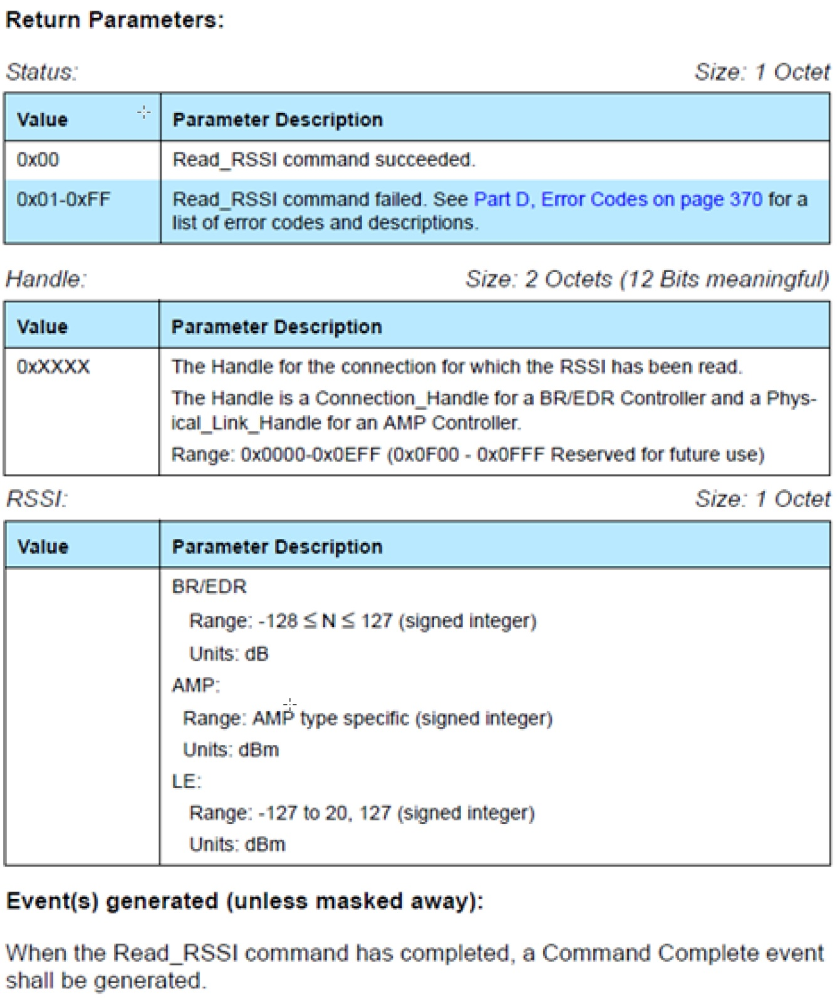

Host Controller Interface (HCI)¶
The host controller interface (HCI) layer is a thin layer which transports commands and events between the host and controller elements of the Bluetooth protocol stack. In a pure network processor application (that is, the host_test project), the HCI layer is implemented through a transport protocol such as SPI or UART.
In embedded wireless MCU projects such as simple_peripheral project, the HCI layer is implemented through function calls and callbacks within the wireless MCU. All of the commands and events discussed that communicate with the controller, such as ATT, GAP, etc, will eventually call an HCI API to pass from the upper layers of the protocol stack through the HCI layer to the controller. Likewise, the controller sends received data and events to the host and upper layers through HCI.
As well as standard Bluetooth LE HCI commands, a number of HCI extension vendor-specific commands are available which extend some of the functionality of the controller for use by the application. See BLE Stack API Reference for a description of available HCI and HCI extension commands callable in the embedded application.
The BLE5-Stack supports a network processor configuration (host_test) that allows an application to running on an external MCU to interface to the BLE5-Stack. The network processor can accept all LE HCI commands over a external transport protocol (UART, SPI, etc); however, because the BLE host and controller both reside on the wireless MCU, some HCI commands will have their corresponding events consumed by the TI BLE host. Thus, it is not possible to interface an external, off-chip Bluetooth host to the CC13xx or CC26xx wireless MCU using standard HCI LE commands. Network processor configurations should use both HCI and TI vendor-specific HCI commands to implement an external Bluetooth application.
Similar to a network processor configuration (host_test), the BLE5-Stack can be configured to be pass a subset HCI commands from a transport protocol (UART, SPI, etc) to the controller with the ability to switch to an intact embedded application. This configuration is known as Production Test Mode (PTM). The subset of HCI commands available are those to perform Bluetooth RF certification. For information on how to enable PTM on your embedded application see Production and Direct Test Mode (PTM, DTM).
PTM should be considered for use for Direct Test Mode (DTM) in place of a full network processor configuration (host_test) when the following is required:
Device is only Flashed Once during the production line
If product flashing is only done once or production firmware is flashed prior to testing Bluetooth RF Functionality, and firmware images can no longer be changed.
Flash Availability for HCI Transport Layer
PTM requires flash along side the application, thus reducing application flash.
Note
Direct Test Mode (DTM) is also supported by the BLE5-Stack. DTM is described in detail in the Direct Test Mode section ([Vol 6], Part F) of the Bluetooth Core Specifications Version 5.3. Host_test supports all DTM commands as well as Vendor Specific modem test commands.
See Configuring the CC2640 for Bluetooth Direct Test Mode (SWRA530) for information on how to set up host_test application binary designed to work with a custom product and chip package types.
Using HCI and HCI Vendor-Specific Commands in the Application¶
Follow these steps to use these commands and receive their respective events in the application:
Include the HCI transport layer header file.
1#include "hci_tl.h"
Register with GAP for HCI/Host messages in order to receive events from the controller. This should be done in the application initialization function.
1// Register with GAP for HCI/Host messages 2GAP_RegisterForMsgs(selfEntity);
Call any HCI or HCI vendor-specific command that is able to be called the application. See the HCI_Function_Maps for a table of which commands can be sent.
HCI events are returned as inter-task messages as a HCI_GAP_EVENT_EVENT. See the simple_peripheral project for an example of this.
The following sections consider receiving HCI events and HCI vendor-specific events.
Standard LE HCI Commands and Events¶
These commands are documented in the HCI Commands and Events chapter (Volume 2, Part E, Section 7) of the Bluetooth Core Specifications Version 5.3. The mechanism to use these commands is the same for any command in this section of the Bluetooth Core Specifications Version 5.3, including HCI LE commands. The example below demonstrates how to use the Bluetooth Core Specifications Version 5.3 to implement an HCI command in the application. The command considered is Read RSSI Command.
Sending an HCI Command¶
Find the command in the Bluetooth Core Specifications Version 5.3:
{kind=link}
Figure 97. RSSI Command from the Bluetooth Core Specifications Version 5.3.¶
Find mapping to BLE stack command. Using the BLE Stack API Reference (HCI section –> HCI Function Maps), shows that this command maps to HCI_ReadRssiCmd().
Using the API from Step 1, fill in the parameters and call the command from somewhere in the application. This specific command should be called after a connection is formed. There is only command parameter here: a 2-byte connection handle. In the case of this example, the connection handle is 0x0000:
1HCI_ReadRssiCmd(0x0000);
Receiving HCI Events¶
Tip
Make sure to register for messages; or no event messages will be sent to your task.
Register with GAP for HCI/Host messages with: GAP_RegisterForMsgs()
Look at the Bluetooth Core Specifications Version 5.3 to see the format of the returned event:
Figure 98. RSSI Return information with Event from the Bluetooth Core Specifications Version 5.3.¶
This command returns a Command Complete event (hciEvt_CmdComplete_t) as stated in the “Corresponding Events” section of the doxygen API ( HCI_ReadRssiCmd() ), so add this as a case in the processing of HCI_GAP_EVENT_EVENT. This is further detailed below.
1static uint8_t SimplePeripheral_processStackMsg(ICall_Hdr* pMsg) 2{ 3 uint8_t safeToDealloc = TRUE; 4 switch (pMsg->event) 5 { 6 case HCI_GAP_EVENT_EVENT: 7 // Process HCI message 8 switch(pMsg->status) 9 { 10 11 // Process HCI Command Complete Event case 12 case HCI_COMMAND_COMPLETE_EVENT_CODE: 13 { 14 // Parse Command Complete Event for opcode and status 15 hciEvt_CmdComplete_t* command_complete = (hciEvt_CmdComplete_t*) pMsg; 16 uint8_t status = command_complete->pReturnParam[0]; 17 18 //find which command this command complete is for 19 switch (command_complete->cmdOpcode) 20 { 21 case HCI_READ_RSSI: 22 { 23 if (status == SUCCESS) 24 { 25 uint16_t handle = BUILD_UINT16( command_complete->pReturnParam[1], command_complete->pReturnParam[2]); 26 27 //check handle 28 if (handle == 0x00) 29 { 30 //store RSSI 31 uint8_t rssi = command_complete->pReturnParam[3];
{kind=link}
First, the status of the stack message is checked to see what type of HCI event it is. In this case, it is an HCI_COMMAND_COMPLETE_EVENT_CODE. Then the event returned from the stack as a message (pMsg) is cast to an hciEvt_CmdComplete_t, which is defined as:
1// Command Complete Event typedef struct 2{ 3 osal_event_hdr_t hdr; 4 uint8 numHciCmdPkt; 5 uint16 cmdOpcode; 6 uint8* pReturnParam; 7} hciEvt_CmdComplete_t;
Next, the cmdOpcode is checked and it is found that it matches HCI_READ_RSSI. Then the status of the event is checked. Now that the event is known, the pReturnParmam can be parsed using the information from the Bluetooth Core Specifications Version 5.3. The Bluetooth Core Specifications Version 5.3 API from above states that the first byte of the return parameters is the Status.
The Bluetooth Core Specifications Version 5.3 API states that the second and third bytes of the return parameters are the Handle. The RSSI is then checked to see if it corresponds to the desired connection handle.
Continuing parsing using the Bluetooth Core Specifications Version 5.3 API, the RSSI value can be found by reading the fourth byte of the return paramters. Finally, the RSSI value is stored.
HCI Vendor-Specific Commands¶
These commands are documented in the TI Vendor Specific HCI Guide. The mechanism to use these commands is the same for all vendor-specific commands. The example below demonstrates how to use the TI Vendor Specific HCI Guide to implement an HCI command in the application. The command considered is HCI Extension Packet Error Rate.
Sending HCI Vendor-Specific Command¶
Find the HCI_EXT_PacketErrorRateCmd() in the TI Vendor Specific HCI Guide.
Use the HCI section in BLE Stack API Reference to find the BLE Stack function that implements this command : HCI_EXT_PacketErrorRateCmd().
Using the API from Step 1, fill in the parameters and call the command from the application. In this specific case, this command should be called after a connection has been formed. The first parameter is a 2-byte connHandle, which is 0x0000 for this example. The second parameter is a 1-byte command ( HCI_EXT_PER_READ ) to read the counters. Therefore, use:
1HCI_EXT_PacketErrorRateCmd( 0, HCI_EXT_PER_READ );
Receiving HCI Vendor-Specific Events¶
Find the corresponding HCI_EXT_PER event in the TI Vendor Specific HCI Guide.
As stated in the “Corresponding Events” section of the command API, this command returns a Vendor Specific Command Complete Event ( hciEvt_VSCmdComplete_t ) Therefore, add this as a case in the processing of HCI_GAP_EVENT_EVENT processing. This is further detailed below.
1static uint8_t SimplePeripheral_processStackMsg(ICall_Hdr* pMsg) 2{ 3 uint8_t safeToDealloc = TRUE; 4 switch (pMsg->event) 5 { 6 case HCI_GAP_EVENT_EVENT: 7 { 8 // Process HCI message 9 switch(pMsg->status) 10 { 11 // Process HCI Vendor Specific Command Complete Event 12 case HCI_VE_EVENT_CODE: 13 { 14 // Parse Command Complete Event for opcode and status 15 hciEvt_VSCmdComplete_t* command_complete = (hciEvt_VSCmdComplete_t*)pMsg; 16 17 // Find which command this command complete is for 18 switch(command_complete->cmdOpcode) 19 { 20 case HCI_EXT_PER: 21 { 22 uint8_t status = command_complete->pEventParam[2]; 23 if (status == SUCCESS) 24 { 25 uint8_t cmdVal = command_complete->pEventParam[3]; 26 27 if (cmdVal == 1) //if we were reading packet error rate 28 { 29 uint16_t numPkts = BUILD_UINT16(command_complete->pEventParam[4], command_complete->pEventParam[5]); 30 uint16_t numCrcErr = BUILD_UINT16(command_complete->pEventParam[6], command_complete->pEventParam[7]); 31 uint16_t numEvents = BUILD_UINT16(command_complete->pEventParam[8], command_complete->pEventParam[9]); 32 uint16_t numMissedEvents = BUILD_UINT16(command_complete->pEventParam[10], command_complete->pEventParam[11]);
First, the status of the stack message is checked to see what type of HCI event it is. In this case, it is an HCI_VE_EVENT_CODE.
Next, the event returned from the stack as a message (pMsg) is cast to an hciEvt_VSCmdComplete_t, which is defined as:
1typedef struct 2{ 3 osal_event_hdr_t hdr; uint8 length; 4 uint16 cmdOpcode; uint8* pEventParam; 5} hciEvt_VSCmdComplete_t;
The opcode is checked by reading command_complete->cmdOpcode, and found that it matches HCI_EXT_PER.
Next, the *pEventParam is parsed to extract the parameters defined in the event API. The first two bytes (shown in red in Figure 99.) are the event opcode (0x1404). The third byte is the Status. This is the case for all vendor-specific events.
From the fourth byte of pEventParam on, the event API from the TI BLE Vendor-Specific Guide is used for parsing, starting at the third parameter. This is the case for all vendor-specific events. For this example, the fourth byte of pEventParam corresponds to the cmdVal parameter. This is shown in memory and explained further below.

Figure 99. RSSI Commend from the Bluetooth Core Specifications Version 5.3.¶
The status is checked by reading the third byte of the event parameters (command_complete->pEventParam[2]). This is shown in yellow in Figure 99..
Starting from the fourth byte of the event parameters (command_complete->pEventParam[3]), the event API states that the next parameter is a one-byte cmdVal. This is checked to verify that this event corresponds to a read of the PER counters. This is shown in pink.
Continuing parsing using the event API, the next parameter is a two-byte numPkts. This is found by building a uint16_t out of the fifth and sixth bytes of the event parameters. This is shown in blue. In a similar fashion, numCrcErr is found from the seventh and eight bytes of the event parameters (shown in green).
Next, numEvents is found from the ninth and tenth bytes of the event parameters (shown in orange). Finally, numMissedEvents is found from the eleventh and twelfth bytes of the event parameters (shown in purple).